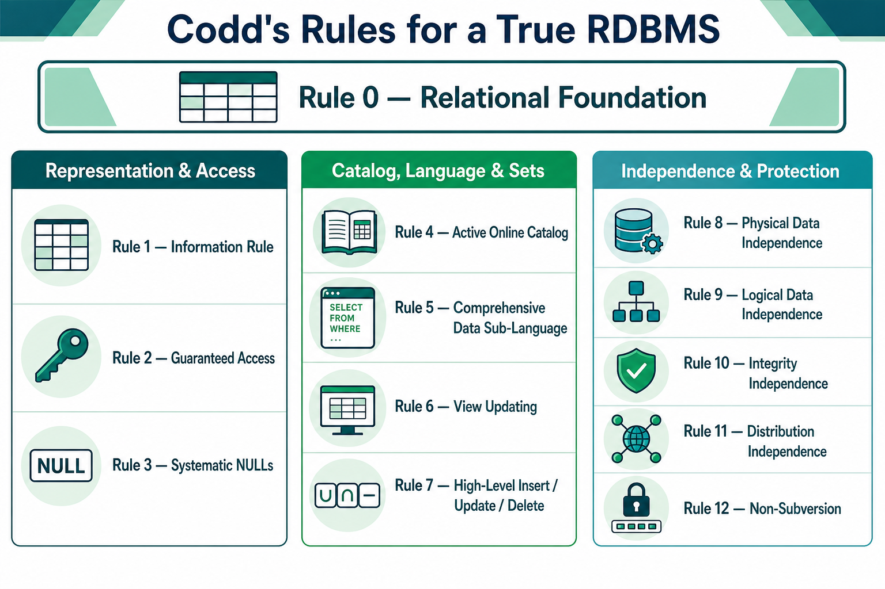

1. Why Codd’s Rules?
After researching the Relational Model, Dr. Edgar F. Codd proposed rules that a database should follow to qualify as a true RDBMS.
They apply when stored data is managed through relational capabilities alone.
Exam trap: They are called “Codd’s 12 Rules,” but numbering runs from Rule 0 to Rule 12—13 statements including the foundation rule.

2. Rule 0 — Foundation Rule
A system claiming to be relational must manage the database entirely through relational capabilities. This is the base for every other rule.
3. Representation and Access: Rules 1–3
Rule 1: Information Rule
All user data and metadata must appear as values in table cells. Everything is represented in rows and columns.
Rule 2: Guaranteed Access
Every atomic value is logically located using table name + primary key + column name. Hidden pointers must not be required.
Rule 3: Systematic NULLs
NULL must be handled uniformly for missing, unknown or not-applicable data—independent of data type. NULL is not zero or an empty string.
4. Catalog, Language and Set Operations: Rules 4–7
Rule 4: Active Online Catalog
The database description must be in an online data dictionary/catalog. Authorized users query it with the same relational language used for normal data.
Rule 5: Comprehensive Data Sub-Language
At least one linear-syntax language must support data definition, manipulation and transaction management. It may be used directly or through an application; bypass access violates the rule.
Rule 6: View Updating
Every view that is theoretically updatable must be updatable by the system.
Rule 7: High-Level Insert, Update and Delete
Operations must work on sets of rows, not only one row. Relational set operations such as union, intersection and minus must be supported.
5. Independence and Protection: Rules 8–12
Rule 8: Physical Data Independence
Changing files, indexes or physical storage must not change how external applications access data.
Rule 9: Logical Data Independence
Logical changes should not affect user views or applications—for example, merging two tables or splitting one table into two. This is difficult to achieve.
Rule 10: Integrity Independence
Integrity constraints belong in the database/catalog and can change without modifying front-end applications or interfaces.
Rule 11: Distribution Independence
Users must not know whether data is at one site or distributed across many locations. This is foundational to distributed databases.
Rule 12: Non-Subversion
A low-level record interface must not bypass relational security or integrity constraints.
6. IBPS SO Quick Revision
| Rule | One-line keyword |
|---|---|
| 0 | Only relational capabilities |
| 1 | Everything in table cells |
| 2 | Table + key + column access |
| 3 | Uniform NULL treatment |
| 4 | Online catalog / data dictionary |
| 5 | One comprehensive relational language |
| 6 | Theoretically updatable views |
| 7 | Set-level insert, update and delete |
| 8 | Physical independence |
| 9 | Logical independence |
| 10 | Constraints independent of applications |
| 11 | Distribution hidden from users |
| 12 | No low-level bypass |
Grouping mnemonic: 0 Foundation → 1–3 Data and Access → 4–7 Catalog and Operations → 8–12 Independence and Protection.
Most likely questions: Data dictionary—Rule 4. Updatable views—Rule 6. Set-level DML—Rule 7. Hard-disk/index change—Rule 8. Table split—Rule 9. Distributed locations hidden—Rule 11. No security bypass—Rule 12.